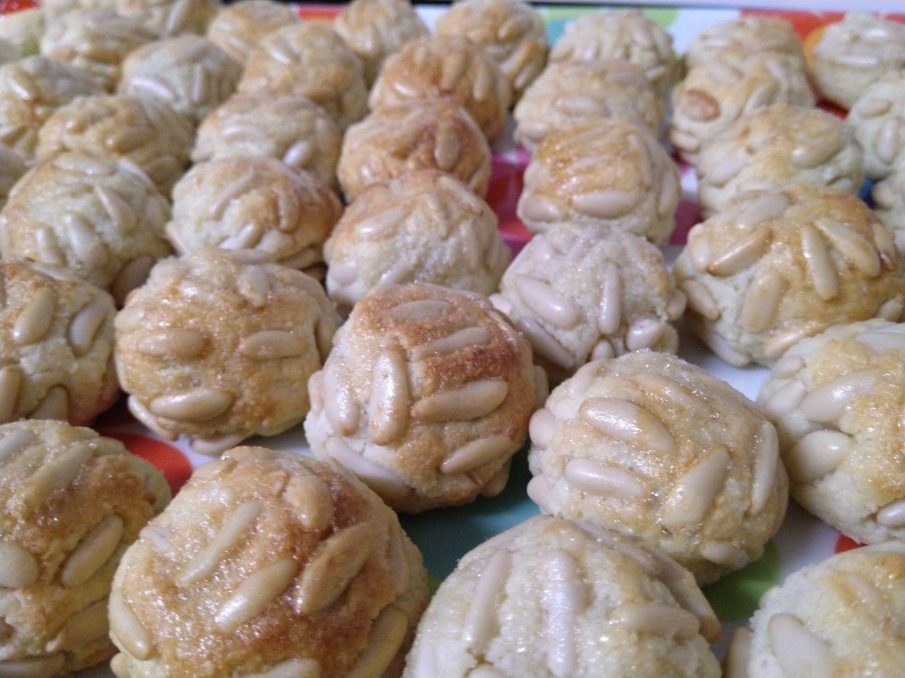
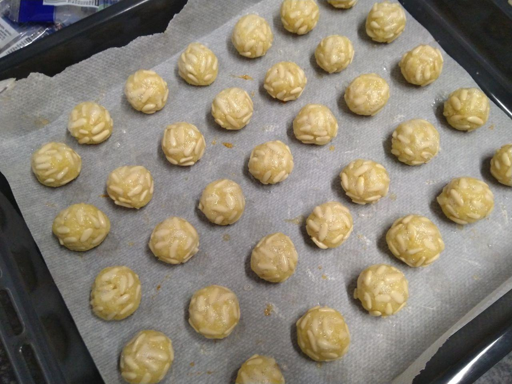
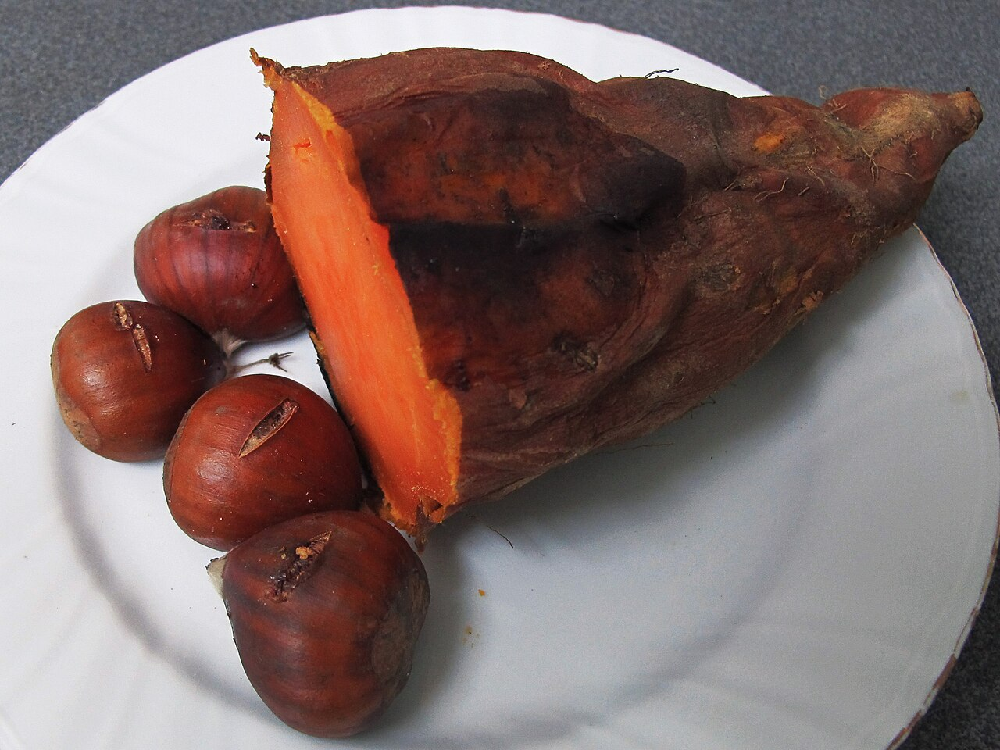
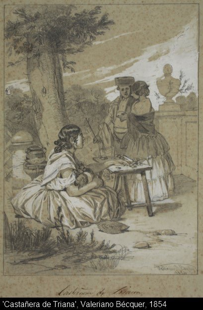
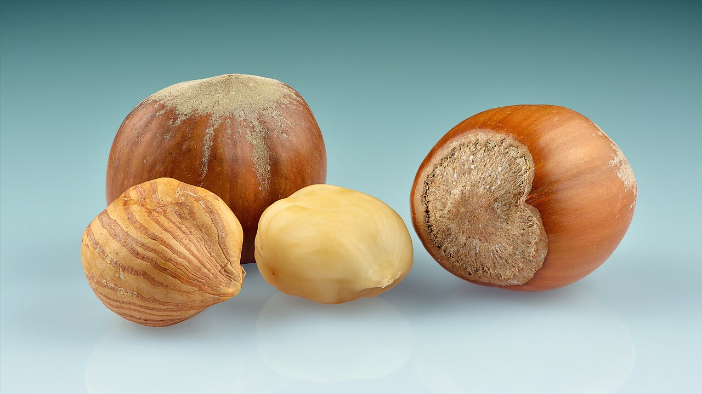

Una mesa, un bombo y veinte números
El mecanismo es sencillo y no ha cambiado mucho. Tres personas se sientan a una mesa con una libreta donde van anotando las apuestas. Al lado hay un bombo con veinte bolas numeradas del uno al veinte. Los que juegan apuestan platos a un número, se gira el bombo y quien acierta se lleva bandejas de confitura, moscatel o panellets. Es la rifa de Tots Sants, y en toda Cataluña solo se mantiene viva en Reus.
Hoy se celebra en entidades como el Orfeó Reusenc, la Germandat de Sant Isidre i Santa Llúcia o el Casal Despertaferro. Antes servía para que las sociedades hicieran caja; ahora se hace, sobre todo, para que no se pierda. Que en una ciudad quede un juego de mesa del siglo XIX asociado a un dulce concreto dice bastante de lo que Reus ha decidido conservar.
Cómo una costumbre de café acabó siendo solo de Reus
Las rifas de panellets eran cosa de ciudad. A mediados del siglo XIX se montaban en plazas, y enseguida pasaron a los cafés y a las pastelerías, que preparaban mesas decoradas con luces, flores y bandejas: los ramellets. Primero se sorteaban con cartas; después, con boletos vendidos por anticipado. Los premios eran lotes de dulces, licores y figuras. El historiador Andreu de Bofarull ya las documentaba en Reus en 1851.
Lo que las mató fue administrativo. A principios del siglo XX el Estado se reservó el control de loterías y rifas, y la costumbre se apagó en casi todas partes. En Reus no: hubo recogida de firmas, gestiones con las autoridades y una reclamación que llegó hasta el Ministerio de Hacienda, que acabó autorizando que siguieran. Una tradición gastronómica salvada por vía burocrática, que no es la forma más épica de salvar nada, pero funcionó.
Aun así estuvo a punto de perderse otra vez: en los años setenta la cosa languideció, y no fue hasta principios de los ochenta cuando las entidades la recuperaron. Desde entonces se ha mantenido sin interrupciones.

Panellets de piñones, los de siempre y los más caros de la bandeja. Foto: ESM · Wikimedia Commons (CC BY-SA 4.0).
Un mazapán con siglos y una discusión de cocina
Un panellet es, en esencia, mazapán: almendra molida y azúcar a partes iguales, ligados con huevo. Su origen es medieval y va unido a la llegada del azúcar a la península de la mano de los árabes, la misma línea que explica el menjablanc que Reus conserva desde el siglo XIV. Almendra, azúcar y paciencia: la repostería del Camp lleva ochocientos años dando vueltas a esos tres ingredientes.
La discusión clásica es si la masa lleva moniato o no. Los puristas dicen que el panellet de verdad es solo almendra y azúcar, y que el boniato es un apaño para abaratar y dar humedad; los otros responden que el boniato lleva tanto tiempo en la receta que ya es la receta. Las dos posturas tienen razón según qué pastelería entres. Lo que nadie discute es la familia: piñones, almendra, coco, café, chocolate, y las variantes de cada casa.


Por qué se come esto y no otra cosa
Nadie tiene una respuesta cerrada, pero hay dos explicaciones que se repiten en la bibliografía y que no se excluyen. La primera: los panellets serían herederos de las comidas de funeral de la Cataluña antigua, y de las ofrendas que los fieles dejaban en la iglesia o en la tumba para que al difunto no le faltara alimento en el viaje. Fruta seca y azúcar, que alimentan y se conservan.
La segunda es más terrenal y más simpática: los campaneros. La víspera de Tots Sants se tocaba a muerto durante horas, toda la noche, y los vecinos subían al campanario con fruta seca, dulces y vino dulce para que aguantaran. De aquella cena nocturna compartida saldría la castanyada tal como la conocemos. Las primeras referencias a la castanyada como costumbre consolidada son de finales del siglo XVIII.

«La castanyera», de Valeriano Domínguez Bécquer (MNAC). La vendedora de castañas es del siglo XIX, igual que las rifas: las dos cosas nacen de la misma calle. Imagen: Wikimedia Commons (CC0).
Por qué el de piñones cuesta lo que cuesta
Las pastelerías catalanas venden alrededor de once millones de panellets por Tots Sants. El precio en obrador se mueve, según los gremios, entre los 50 y los 70 euros el kilo, con subidas de entre el 3% y el 6% en las últimas campañas. La explicación está casi entera en un ingrediente: el piñón puede irse a 70 euros el kilo, mientras que la almendra molida ronda los 15.
Por eso una bandeja mixta sale más a cuenta que una solo de piñones, y por eso el panellet de coco o de café es el que más ha crecido en las vitrinas. Conviene saberlo antes de protestar por el precio: no es margen, es materia prima. Y conviene saber también que la almendra sí es de casa —Cataluña la produce sobre todo en las Terres de Lleida, con Tarragona en segundo lugar— y que el panellet de avellana tiene aquí la mejor materia prima posible.
El vinoEl moscatel no es un añadido: es parte del premio
Qué beber · Y por qué estaba ahí desde el principio
Fíjate en lo que reparte la rifa: confitura, panellets y moscatel. El vino dulce no es un maridaje inventado por un sumiller; está dentro de la tradición desde que los vecinos subían al campanario con una botella. Y aquí tenemos con qué: los vinos licorosos de la DO Tarragona, el Tarragona Clàssic entre ellos, son históricos y siguen siendo de los grandes olvidados fuera del territorio. Un panellet de piñones con un dulce de garnacha es una combinación local de arriba abajo.
Tres cosas para hacer bien este Tots Sants
La primera, comprar los panellets en un obrador del Camp y preguntar de dónde sale la almendra: la respuesta dice más del producto que cualquier etiqueta. La segunda, abrir una botella de vino dulce de aquí en lugar del refresco de turno. Y la tercera, si te pilla en Reus el día 1, acercarte a ver la rifa. No es una recreación para turistas: es gente del barrio jugándose una bandeja de panellets, como en 1851.
Fuentes consultadas: Carrutxa (les rifes de panellets), Reus Digital, El Punt Avui, Gremi de Pastisseria de Barcelona i de Lleida, Betevé, VilaWeb, Segre, Festes.org. Imágenes: Francesc Fort y ESM (CC BY-SA 4.0), jacilluch (CC BY-SA 2.0) y MNAC vía Wikimedia Commons (CC0).
Newsletter
¿Quieres recibir la próxima crónica antes que nadie?
Crónicas de los restaurantes visitados, vinos recomendados y novedades del Camp de Tarragona. Cada quince días, sin ruido.
Sin spam · Date de baja cuando quieras.
Más dulce y más almendra del Camp
 Curiosidades
Curiosidades
El menjablanc · Una crema de almendras con siglos de historia
Del Llibre de Sent Soví del siglo XIV a las confiterías de Reus: la otra gran receta de almendra del Camp.
Leer →
CuriosidadesLa avellana de Reus · La lonja que aún le pone precio
La DOP que hay detrás del panellet de avellana, y la subasta de los lunes que decide cuánto vale la cosecha.
Leer →